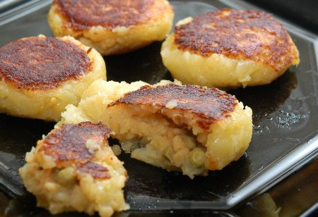

| Zutaten für 4-8 Personen als Hauptmahlzeit oder Vorspeise | |
| 1 kg | Gschwellti |
| 1 KL | Salz |
| 30 g | Muung Dhal |
| 40 g | tiefgekühlte Erbsen |
| 1-2 dl | Wasser |
| 1/4 KL | Salz |
| 2 Prisen | Chilipulver |
| 1 Msp. | Ingwerpulver |
| 1/4 EL | Korianderblätter, frisch, gehackt |
| 1/2 KL | Garam Masala |
| 2 KL | Limonensaft |
| 2 EL | Erdnussöl |
| 2 EL | Ghee |
Gschwellti schälen, an der Röstiraffel reiben.
Salz über die geraffelten Kartoffeln geben.
Aus den geraffelten Kartoffeln ca. 20 Kugeln formen.
Muung Dhal 15 Minuten einweichen.
Tiefgekühlte Erbsen in eine Pfanne geben, das eingeweichte Muung Dhal zugeben mit 1-2dl Wasser 20 Minuten gar kochen.
Alle Gewürze in einer Schüssel mischen. Das gekochte Muung Dhal, Erbsen dazumischen.
In jede Kugel ca. 1 EL Füllung hineingeben und verschliessen, flachdrücken.
Erdnussöl und Ghee in einer Bratpfanne erhitzen, die Kartoffeltätschli, auf mittlerer Stufe, beidseitig goldbraun braten.
Patricia Krummenacher, Indischer Kochkurs, 2006
RE, April 2006: Sensationell!
@LINKBACK_TAG@ @WAKELOCK@